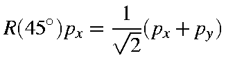
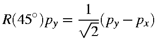
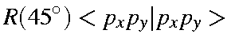
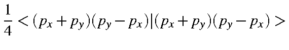
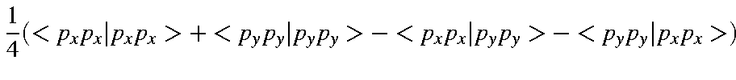
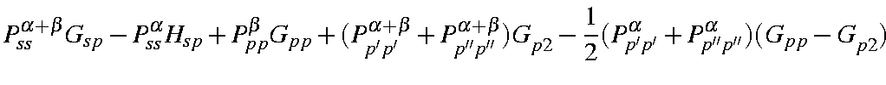
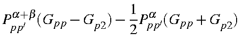

Next: NDDO two-electron two-center Up: Approximations used in Previous: Neglect of three


Next: NDDO two-electron two-center Up: Approximations used in Previous: Neglect of three
For each atom there are a maximum of five one-center two-electron integrals. These are <ss|ss>, <ss|pp>, <sp|sp>, <pp|pp>, and <pp|p'p'>, where p and p' are two different p-type atomic orbitals. In the original formulation [55] there was a sixth integral, <pp'|pp'>, but it can be shown that this integral is related to two of the other integrals by:
<pp|p'p'> = 1/2(<pp|pp>
- <pp|p'p'>)
|  | |||
|  |
| $"> | = | $"> | |
| = |  + |
| <ss|ss> | = | Gss | |
| <pp|pp> | = | Gpp | |
| <sp|sp> | = | Hsp | |
| <pp|pp> | = | Gpp | |
| <pp|p'p'> | = | Gp2 |
| : | |||
| : | |||
| : |  | ||
| : |  |


Next: NDDO two-electron two-center Up: Approximations used in Previous: Neglect of three